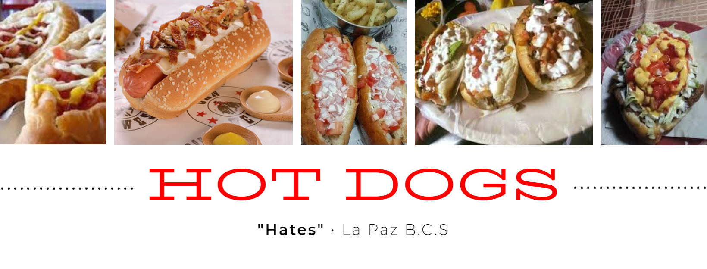
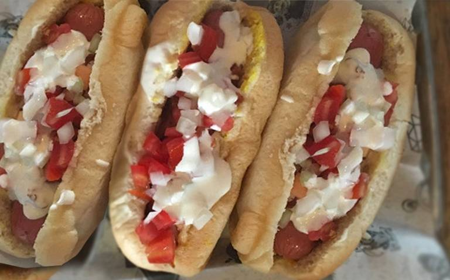

Bienvenido
Los "Hates" sudcalifornianos
De acuerdo con el clamor popular desde la época de los 70’s se habla del Hot Dog en esta ciudad capital; se le atribuye el término “hate”
A finales de los 80’s y principios de los 90’s el Hot Dog ya se había convertido en un ícono de la comida sudcaliforniana. En aquel entonces los puestos más populares se encontraban ubicados afuera del Palacio de Gobierno (frente al CCC, hoy Chedraui Palacio), así como a un costado de Foto Miguel (Belisario Domínguez, colonia Centro) y sobre la 16 de Septiembre (que según los comensales son los más exquisitos).
